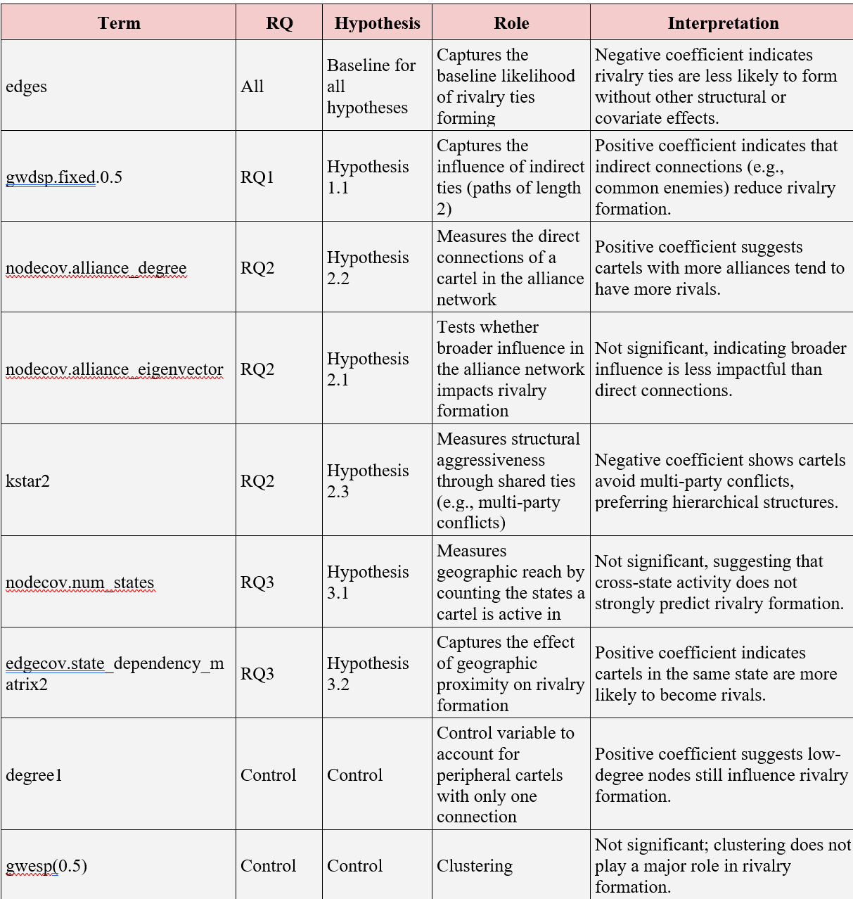

Team Assignment - Team 4
Executive Summary
The research addresses the dynamics and connections between Mexican cartels using Exponential Graph Models (ERGMs). The main focus is set upon the rivalries between the cartels and what are the main reasons for them to form. Our study explicitly addresses three research questions:
- Do cartels with a common enemy avoid rivalry between each other?
- Are cartels with higher centrality more likely to engage in conflicts with other cartels?
- How do geographic territories of operation affect rivalry formation?
The above-mentioned re search questions propose the ideas that shared enemy of two cartels lead to no rivalry between those two parties; higher centrality of the cartel node increases the probability of conflict with other cartels; geographic factors like area of operation play a crucial role in creation of rivalries. Our results show the law enforcement and policymakers that cartels with shared enemy are less likely to be enemies, the geographic location of the cartel increases the likelihood of having rivals, and that the centrality of the cartel in alliance network not necessarily lead to having more rivals in the network.
Introduction
The Mexican cartels have long been notorious for their effectiveness and power, employing approximately 175,000 individuals (Smith (2021)) and being responsible for 14,000 homicides in 2022 (Uppsala Conflict Data Program (2022)). Currently, Mexico’s illicit networks are once again characterized by a bipolar cartel structure. While this bipolarity was once dominated by the Sinaloa Cartel and Los Zetas in the 2000s, today the two primary poles of power are the Sinaloa Cartel and the Cártel de Jalisco Nueva Generación (CJNG). However, they do not operate in isolation; numerous smaller cartels and criminal groups also influence Mexico’s illicit industries and have the potential to rise to prominence under favorable conditions, as has repeatedly occurred throughout the past century (Jones et al. (2022)).
The potential collapse of CJNG leadership through death or arrest or further fragmentation within the Sinaloa Cartel due to internal conflicts raises critical questions about which organizations may emerge to fill the power vacuum. Understanding these dynamics is therefore essential to proactively identify new threats. Not only is this important for policymakers in Mexico and the United States but also for those in Europe, particularly the Netherlands, as both of Mexico’s major cartels are expanding their operations globally, establishing drug production facilities and distribution networks with the assistance of local criminal organizations (Europol-DEA et al. (n.d.)).
To address these questions, it is important to analyze how both endogenous and exogenous factors influence cartel rivalries and, consequently, their power within the illicit industry. Earlier research has been done on the alliances and rivalries between the cartels. For example, by Jones et al. (2022) . They performed an exploratory analysis with the goal of getting an insight into the landscape of the dark networks in Mexico. Their research does, however, lack any form of causal inference as they mentioned in their paragraph on limitations and avenues for further research. Other research such as the 2022 article from Francisco Sollano Jr and the article from Nix et al. (2016) focus more on the relationship between members from allied gangs for a small subset. Thus, there is currently a need for causal network analysis on the alliances and rivalries between cartels to understand why the big two obtained their position in the competitive network and to understand which upcoming gangs are likely to become the center of future conflict. To address the need for causal network analysis in the context of alliances and rivalries in Mexico, an ERGM is conducted. This approach allows for the proper consideration of dependencies between the ‘nodes’ (cartels) in the network, while also accounting for broader social forces, such as tendency for criminal organization to form triadic relationships (Asal et al. (2015)). Coutinho et al. (2020) conducted an ERGM to the intelligence data from the Canadian province of Alberta to explore the conditions under which members of different, larger organized crime groups collaborate. Their study focused on criminals and criminal organizations involved in various crime types across multiple geographic locations. The findings revealed that when criminal groups operate in the same geographically concentrated illicit markets, their members are less likely to collaborate, indicating the challenges or undesirability of cross-group cooperation in such contexts (Coutinho et al. (2020)).
Similarly, Asal et al. (2015) applied an ERGM to analyze a dataset of 499 terrorist organizations that engaged in at least one act of terrorism between 1998 and 2005, in order to understand why terrorist groups, form alliances and rivalries. Their results showed that alliances tend to form between organizations that share similar motivations, are comparable in organizational age, target the same primary enemy, originate from the same region, and are based in countries with smaller militaries (Asal et al. (2015)). Thus, the application of ERGM in the context of organized crime and terrorist networks has proven to be a valuable tool for understanding the underlying factors that drive alliances and rivalries. By utilizing ERGM in the study of Mexican cartel rivalries, this research aims to better understand how both internal and external factors influence power dynamics in criminal networks. It will help reveal the conditions that lead to the formation or breakdown of rivalries and alliances within the cartels. Cartels follow their own goals and ambitions, which in some cases lead to tensions with other groups (Trejo and Ley (2018)). Our study aims to investigate how these conflicts are iniated and what impact they have on the cartel’s. Therefore, one of the research goals is to understand if the famous saying that “the enemy of my enemy is my friend” is also the case within this unprecedented context. It is hypothesized that if cartel A is a rival of cartel B, and cartel C is also a rival of cartel B, then cartels A and C are not likely to start a conflict with each other. This would serve as evidence that cartels facing the same enemy can unite merely by sharing the same adversary as a strategic approach to increase their strength compared to the other cartels. The dynamics that are presented here could be beneficial to the law enforcements and policymakers not only in Mexico, but around the world. This would help to understand how the cartels operate and what their motives for rivalries are. Therefore, the study introduces the first research question and supporting hypothesis:
RQ1: How do rivalries among Mexican cartels influence the formation of rivalries with other cartels, considering that cartels might avoid conflicting with their rivals’ enemies?
Hypothesis 1: Cartels that share a common enemy are less likely to form rivalries with each other, considering the principle that "the enemy of my enemy is my friend”.Cartels operate within a complex web of alliances and rivalries, where their position affects their access to resources and information. Additionally, it also affects their ability to coordinate with others. Understanding how a cartel’s prominence and behavior within these networks impacts the formation of rivalries is therefore crucial to unraveling the mechanisms of inter-cartel conflict. Consequently, the study will examine how centrality within competitive and alliance networks influences the probability of a cartel becoming a target of hostility or rivalry. Based on the existing literature by Jones et al. (2022) the paper therefore hypothesizes that a prominent cartel with a position of influence in the alliance network may be perceived as a greater threat or a more valuable target due to its superior access to resources and information. Similarly, the formation of extensive alliances by a cartel might provoke rivalries from other groups who see such partnerships as a challenge to their own dominance. Additionally, cartels that exhibit more aggressive behavior, whether through territorial expansion, violent tactics, or competitive disruption are likely to attract more adversaries, as their actions directly threaten other groups’ interests and provoke anger. This leads to our second research question and the corresponding hypotheses:
RQ2: In a competitive network, how does a cartel’s centrality in networks impact the formation of rivalries?
Hypothesis 1: Cartels with higher centrality (influence) in the alliance network indicating stronger connections and better access to information are more likely to have rivals because their prominence makes them significant targets.
Hypothesis 2: Cartels with a greater number of alliances in the alliance network tend to have more rivals, as their extensive network of partnerships can provoke competition and hostility.
Hypothesis 3: Cartels that display more aggressive behavior in the competitive network are more likely to form more rivalries.An expansive geographic reach increases the likelihood of direct competition for control over critical assets because it exposes cartels to a broader range of contested areas and strategic resources. As cartels expand their operations across multiple states, they often enter territories that are already controlled or coveted by rival groups. This overlap creates flashpoints for conflict, as control over lucrative markets (e.g., urban centers for drug distribution), supply chains (e.g., smuggling routes, transportation networks), and trade routes (e.g., highways, border crossings, or seaports) is critical to maintaining and growing their revenue streams. Additionally, when cartels operate in the same state it is expected that the probability of a rivalry increases due to competition for local resources and territory (Dulin and Patiño (2020)). Thus, the research question enables us to understand the relationship between the geographical distribution of cartels and conflict. These insights can help to identify cartel competition and ultimately intervene effectively in organized crime.
RQ3: How do geographic factors shape rivalry formation in competitive networks?
Hypothesis 1: Cartels operating in multiple states are more likely to form rivalries, as their wider geographic reach increases the potential for territorial disputes.
Hypothesis 2: Cartels operating within the same state are more likely to form rivalries due to intensified competition for local resources and control.The next parts of our research focus on the introduction of our dataset and used methodology. The paper aims to dive deeper into the rationale behind the usage of certain ERGM terms and alternatives to the model. Moreover, the results are analyzed to provide answers to the research questions and actionable insights for the beneficiaries in the form of policymakers, law enforcement and researchers.
Dataset
The dataset that the paper addresses was obtained from the official website of Mexico’s program against drugs called “Politica de Drogas” (CentroGeo - GeoInt (2020)). The data included in the dataset was first collected by Laura Helena Atuesta, Alejandro Procoroba, and Darina Nava. It includes alliances, rivalries, and areas of operation of cartels in Mexico during the year 2020. Such recently obtained information provides a better overview of the situation happening in the region nowadays. This is the main and only dataset that we used for our research to delve deeper into cartel dynamics and behavior, therefore it is of utmost importance for this paper. The data put together provides information on elements linked to the cartels that can shed a possible light on the subject of analyzing which cartels are allies and which ones are rivals. Based on the regions the cartels operate in; it might be also valuable to understand if the alliances and rivalries are based on distance and proximity or if this doesn’t play a role in their case. Furthermore, we can determine if shared criminal activities result in cartel cooperation or increased competition, merely by looking at the various unlawful activities e.g. drug trafficking. For example, cartels involved in related illegal activities may band together to increase profits or, on the other hand, may engage in intense competition to control the market.
By taking into account the territory size and armed conflicts between cartels, such insight could imply that cartels controlling larger territory are more inclined to engage in conflicts with their competitors. Having all that in mind, the dataset brings lots of value in determining cartels’ behavior on various fronts and the reasons for the fights among them. The dataset can provide evidence and support for the phenomena of cartel dynamics and their behavior. By answering the crucial research questions stated in this research, it can help scholars gain more in-depth knowledge about organized crime. However, potential biases must be taken into consideration. Due to the fact that cartels don’t openly publish information about their activities, the sources we used might be distorted or incomplete. This can have a potentially negative impact on the results that we obtained from our research, by giving misleading information about the cartel dynamics. It is therefore crucial to acknowledge those limitations. All things considered, the dataset that we analyzed is a useful tool for investigating the world of Mexican cartels, that provides details about their partnerships and rivalries. Based on our findings, researchers could better understand the factors affecting the cartel behavior and the potential consequences for the law enforcement and policymakers not only in Mexico, but around the globe.


Research Rationale
The ERGM is specifically useful in our case as it can lead to a better understanding of the complex relationships between Mexican cartels and their rivalries. Our first reason for choosing this model was because of the network modeling. The research questions that this paper addresses include the possibility of triadic closures in the network. Those are especially taken into account by ERGM and are beneficial for our study. The paper dives deeper into the ERGM terms used in the Results section. If traditional statistical methods were to be used, it could assume independence between the observations, and this is not our goal. Moreover, our hypotheses also could not be tested without the use of ERGM and based on that could not be supported or rejected. To make sure everything is correctly set up, we had to include specific terms into our model to test the hypotheses about the network formation. Another benefit of ERGM is that it is also flexible to some extent. It can include the node-level and edge-level attributes. By putting them together, the model can examine how these factors influence the formation of network. Last but not least, it also proposes interpretable coefficients that help us measure the network characteristics, such as the influence of alliances on rivalry creation. For our ERGM to provide the best results, we have chosen those terms:
Based on our research, there are other methods that would be also suitable to use in our study. One of them includes stochastic black models (SBM) or traditional social network analysis (SNA) techniques. The former would be useful to identify clusters and structures among network, however, would not provide many interesting insights about triadic closures or specific network configurations. The latter might provide additional insights into the descriptive analysis of the network but, as the goal is to find the interdependence between variables in the network, it would not be a suitable choice. For that reason, our ERGM is designed to capture the dependencies as stated in the research questions and hypotheses. By using the above-mentioned terms and especially ’gwesp’, we can observe and find the triadic closures within our model.
Results
This study focuses on cartel rivalry and alliance networks in Mexico. We calculated the attributes of the alliance network, such as alliance degree and eigenvector centrality, and used them as exogenous variables to match with the rival network. In addition, the relationships between the states based on the cartel were encoded and State Dependency Matrices were constructed. This report uses ERGM to simulate the presence of edges in a competitive network as an endogenous network structure and an exogenous covariate. To address the research questions and test the hypotheses, ERGMs containing Edges, gwesp, Node Covariates, Edge Covariates, Degree Distribution, and gwdsp were included.
Gwesp captures triangular closure through weighted statistics. Kstar and gwdsp measure shared neighbors to reflect clustering effects. Node covariables like eigenvector centrality and num_states introduce heterogeneity. Edge covariates like state dependency matrices encode geographic dependencies, ensuring the model captures both structural and contextual dynamics effectively.
Data Manipulation
First of all, there are Rivalry data, Alliance data, and State Dependency data in the data source. By filtering the edges of type Rivalry and Alliance from the original data, we could generate the Rivalry Network and Alliance Network respectively. In the Rivalry Network, the study removed all isolated nodes with a degree of 0, which retains only the cartels involved in competitive relationships.
The data was cleaned, aggregating cartels that had the same name across multiple rows in the raw dataset into single entities to prepare the data for analysis. This ensured that every cartel was a unique node, with their alliances and rivalries, as well as operational attributes, consolidated in a manner representative of reality. The degree and influence of each node in the Alliance Network were calculated and added as node attributes in the Rivalry Network. The number of states for which each cartel is an active state has been counted and added as an attribute of the node (as another proxy for geographic extensiveness of operation of the cartel).
The paper produces two state dependency matrices. One is the binary matrix, “state_dependency_matrix1”, and one weighted, “state_dependency_matrix2”. The “state_dependency_matrix1” provides for each pair of cartels if they are or not present in the same state; while “state_dependency_matrix2” accounts for the number of shared states between the pairs. Lastly, the network was transformed into an object that could be used by ERGM for analysis to fit into the ERGM framework. NA values were checked and verified that indeed all attributes that needed validation were correctly assigned to the Rivalry Network.
Modeling Strategy
Our modeling strategy incorporated structural network terms and covariates to explore the rivalry ties among Mexican cartels. By iteratively adding and removing terms, this study aimed to balance model fit, interpretability, and alignment with research questions and hypotheses.
This study began with a baseline model that included only the edges term, which represents the baseline likelihood of rivalry edge forming. This initial model confirmed the sparsity of the network, with a negative and significant edges coefficient (-5.76, p < 0.001). However, this model had poor fit metrics indicating that it did not capture much of the network’s structure. This motivated us to explore additional terms.
To investigate whether clustering tendencies influenced rivalry formation, we added the gwesp term with a scaling factor of 0.5. The inclusion of gwesp slightly improved the AIC (481.23), but the term itself was not statistically significant. This result indicated that clustering did not strongly influence rivalry edge in this network, leading us to delete it in later models.
To measure the impact of the number of cartel connections on rival relations in the alliance network, this study uses alliance_degree as a node attribute. This helps to explore whether the number of alliance relationships affects the formation of rival relationships. To address the geographic dynamics of rivalry formation, this research introduced the “state_dependency_matrix1” which is the binary matrix for the active state. The coefficient for this term was highly significant (3.53, p < 0.001), showing a strong relationship between geographic overlap and rivalry formation. The inclusion of this term drastically improved model fit, reducing the residual deviance and demonstrating that shared state activity was an important driver of rivalry ties. However, the strong influence of “state_dependency_matrix1” increased potential over-reliance on this single binary covariate. To ensure that the model did not rely on this term, we conducted similarity analyses. To ensure that the model did not rely on this term, we conducted similarity analyses. Jaccard similarity (0.169) and normalized Hamming distance (0.158) calculations revealed that while the rivalry network and state matrix overlapped to some extent, the binary matrix explained only part of the network structure. To optimize the geographical covariates, we used a weighted state dependency matrix (“state_dependency_matrix2”).
The node-level covariates incorporated to address hypotheses related to cartel centrality. The nodecov(“alliance_degree”) term, which measures the direct connections of a cartel in the alliance network, consistently showed a positive and significant relationship with rivalry edge (e.g., 0.06, p < 0.01). On the other hand, the nodecov(“alliance_eigenvector”) term, which captures broader influence in the alliance network, quantifies the influence of cartels in the alliance network, thereby revealing whether cartels with significant influence in the alliance network are more likely to form more rivalries. However, it was not consistently significant, suggesting that direct connections played a more prominent role than overall centrality. To address the structural dynamics of rivalry, we added terms for indirect ties and shared connections. The gwdsp measures the influence of indirect ties (paths of length 2). While initially inconsistent, this term became significant in later models, with a positive coefficient (0.75, p < 0.001), showing that indirect ties influenced rivalry formation when combined with other covariates. The kstar2 term captures the effect of shared enemies and popularity and it is consistently significant negative coefficient (e.g., -0.84, p < 0.001). Finally, the degree1 term, representing peripheral cartels with only one connection, was positive and significant (1.47, p < 0.001), indicating distinct patterns among these cartels in rivalry formation. This term was included as a control variable to account for the influence of low-degree nodes on the network structure.
After evaluating all models, Model 9 is the final model. Model 9 integrates findings from previous iterations and explicitly addresses all research questions and hypotheses. It includes edges, gwdsp, kstar2, degree1, nodecov(“alliance_degree”), nodecov(“num_states”), and “state_dependency_matrix2”. It achieved the best AIC (463.84) and comparable BIC (510.39).
Model Evaluation
In conclusion, Model 9 was chosen because it provided the best balance of fit, interpretability, and alignment with the theoretical framework. Its inclusion of significant structural and covariate terms ensured a robust explanation of rivalry formation without over-relying on any single factor.
1. MCMC Diagnosis
All the trace plots oscillate steadily around the mean value, indicating that model have converged and is effectively sampling. No significant deviations or shifts were found in the graph, so the model is stable, and the parameters have been selected appropriately. The density plot of the three terms is smooth and close to normal, indicating that the three terms performed well in sampling. The goodness of fit for most parameters is distributed around the median, indicating a good model fit. The model statistics indicate that the model can well reproduce the term characteristics of the actual network. In the node degree distribution graph, the distribution of the simulated network roughly matches the distribution of the actual network. In the real network, the degrees of most nodes are concentrated in a small range (0 to 2), and as the degree increases, the proportion of nodes decreases rapidly.
The geodesic distance map reveals that the distribution of the simulated network is consistent with the actual network. However, there is a deviation in the distribution of nodes with a path length greater than 7.
2. Model Analysis
According to Table 2, the estimated value of edges is -3.69 and the p-value is less than 0.001, which means that after many iterations, the network is still very sparse. The edge term describes the overall tendency of rivalry ties to form, independent of other structural or covariate terms. Its negative coefficient suggests that rivalry relationships are generally unlikely to form in the network. These conflicts do not happen randomly and instead require the influence of other structural patterns or covariates.
Gwdsp coefficient of 0.621 indicates a strong clustering effect. The low standard error of 0.178 also confirms its reliability. This high positive coefficient indicates that the nodes play an important role in the network structure by sharing indirect connections formed by enemies. Agglomeration effects show that rivalry networks may be driven by common enemies, forming more complex indirect interactions rather than a single direct conflict.
The nodecov.alliance_eigenvector has a large standard error and p-values of 0.95 and 0.75 respectively. This indicates that centrality has no significant impact on network structure and that the indicators are not estimated accurately. A high p-value is not statistically significant, so the centrality of the coalition network does not necessarily make the cartel more likely to be a competitor. The coefficient (0.076) of nodecov.alliance_degree is positive, and the p-value is less than 0.05. This indicates that the number of alliance relationships is positively correlated with the formation of rivalry relationships and is significant. The coefficient of kstar is -0.76, and it has low standard error and p-value. This indicates that the network does not form a multi-party rivalry structure, and it is more inclined to a hierarchical structure.
The coefficient for nodecov(num_states) is -0.004. A smaller negative coefficient indicates that nodes that are active in more states are slightly less likely to form a connection. However, the p-value of 0.96 indicates the number of states will not relate to rivalry formation. As a result, the number of states in which a cartel is active does not have a meaningful impact on its likelihood to engage in rivalry relationships within the network. The coefficient of edgecov(state_dependency_matrix2) is 2.4 and p-value is smaller than 0.001. This positive and significant correlation means that geographical proximity or overlap is a key factor in the formation of rivalry. Cartels active in the same state are also more likely to conflict, possibly due to direct competition for territory, markets or resources.
3. Hypotheses Validation
To sum up, hypotheses can be verified one by one:
Hypothesis 1 of the RQ1 can be verified using gwdsp and kstar. A positive coefficient for gwdsp indicates that cartels with a common enemy tend to avoid and reduce competition. Furthermore, the fact that kstar has a negative coefficient means that the cartel will not be connected to another one through indirect links (common enemy). Therefore, the hypothesis is supported.
In the RQ2, the coefficient for nodecov.alliance_eigenvector is statistically insignificant, indicating that the centrality of the alliance network does not significantly influence the formation of rivalry. This means that cartels with higher or lower alliance centrality are not more or less likely to engage in conflicts. Thus, Hypotheses 1 is rejected. The positive correlation significance of nodecov.alliance_degree indicates that cartels with a higher number of alliance members are more likely to form rival relationships. Therefore, hypothesis 2 is verified. The negative coefficient for kstar suggests that cartels avoid conflicts involving multiple parties, even in dense subnetworks. This indicated the hypothesis that cartels with popularity (measured by Kstar) are more likely to engage in multi-party conflicts. As a result, Hypothesis 3 was also rejected.
The result of “nodecov.num_states” in RQ 3, shows that cross-states alliances will not affect rival relationships, which leads to the rejection of Hypothesis 1. Hypothesis 2 is confirmed by the large positive coefficient of “edgecov.state_dependency_matrix”. Cartels within the same state are more likely to compete due to direct competition for territory, markets, and resources.
Conclusion
The study focused on the understanding of the rivalry connections between Mexican cartels using the ERGM. The main research questions that was addressed, aimed to provide actionable insights into the rivalries connections between cartels and what influence them. From our analyses, we gained handful of important insights.
Firstly, for the RQ1, we found a support for the Hypothesis 1. This means that if two cartels have the same enemy, they are less likely to form rivalry with each other. The significance came from the positive coefficient of ‘gwdsp’ term and negative coefficient of the ‘kstar2’. Secondly, the hypotheses for RQ2 were rejected. Cartels with higher centrality measure were not engaged to the higher level in rivalries with other cartels. This implies that if the cartel has alliance with higher number of other cartels, it also tends to have more rivals. The third research question and underling hypotheses were significant and supported, showing that regions where cartels operate play a crucial role in the fact that cartels which operate on the same territory become rivals.
Our findings benefit mostly the policymakers and law enforcement agencies in Mexico. The case could be also applied to other parts pf the world, as it provides practical insights into the connections within crime-focused organizations networks. Based on the geographic insights, the law enforcement can better allocate the resources to predict the future possible rivalries and act before they escalate. Moreover, the researchers would be also beneficiaries of the findings, as it can give deeper knowledge into the contextual and structural elements influencing the cartels’ behavior.
The open problem that still remains is connected with the incompleteness of data and/or possible biased information in the analyzed dataset. The cartels’ behavior in terms of rivalries and alliances can also be influenced by other socio-economic and political factors. Future research could address those limitations by gathering more data to ensure and understand the wider perspective on the cartels’ behavior. Next to that, the usage of dynamic ERGMs would also be beneficial for the research, to capture the potential changes over time.
Appendices
